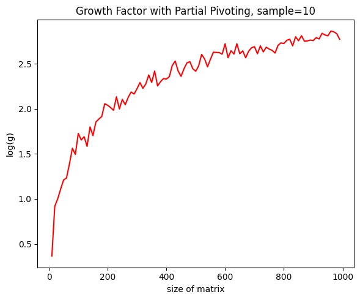
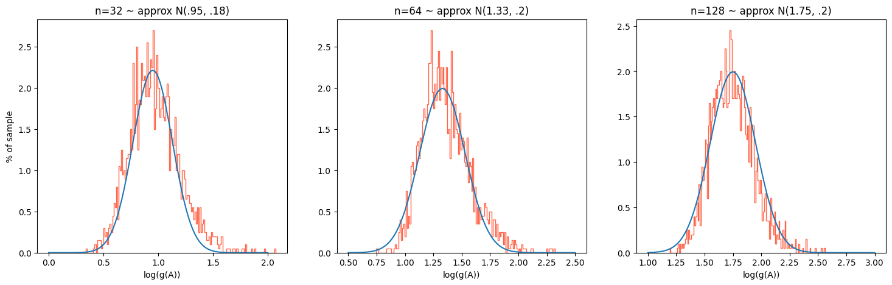
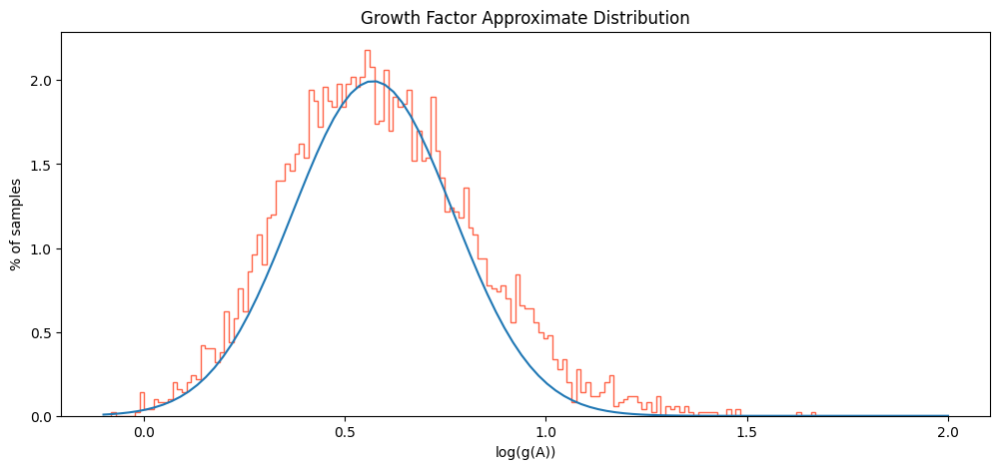

During partial pivoting Guassian elimination (PPGE) of a matrix (just like regular GE, except we choose as a pivot the element which satisfies \({\max}_i|a_{ij}|\) for each column \(A^{(j)}\)), one sometimes accumulates large intermediate values——so much so that the final result in unreachable because of overflow. The following is a classical example:
\[
A = \begin{bmatrix}
1 & 0 & 0 & 0 & 1\\
-1 & 1 & 0 & 0 & 1\\
-1 & -1 & 1 & 0 & 1\\
-1 & -1 & -1 & 1 & 1\\
-1 & -1 & -1 & -1 & 1\\
\end{bmatrix} \to
\begin{bmatrix}
1 & 0 & 0 & 0 & 1\\
0 & 1 & 0 & 0 & 2\\
0 & 0 & 1 & 0 & 4\\
0 & 0 & 0 & 1 & 8\\
0 & 0 & 0 & 0 & 16\\
\end{bmatrix} = B
\]
For a \(n\) by \(n\) matrix as formulated above, PPGE will result in a matrices whose maximal element is \(\leq 2^{n-1}\). In fact, this is the worst case scenario. For much larger matrices, say $1000 \times 1000$, we are going to run into problems. Despite this, PPGE is by far the most popular method for accomplishing LU decomposition, and system solving. Why? Basically, the catastrophic example above is possible, but unrealistic.
One calls the ratio of the maximal elements in absolute value of \(A\) and \(B\) the "growth factor" of \(A\), or \(g(A)\). As one would expect, the larger the matrix \(A\), the larger its growth factor (in the example above, this relationship is \(2^{n-1}\)):

This data is derived from normally distributed real matrices. Surprisingly, we don't see as exaggerated growth factors as the contrived example let on, and even the $\approx1000\times1000$ matrices are well suited for computation with PPGE. Hence: how likely is it that we run into examples remotely as bad as the initial example? We plot to find out that the answer is "almost never":

The above analysis only involves a few hundred sample matrices of each size. A sample of 5000 16x16 matrices yields similar behavior:

Which is to say, with growth factors that cap out at \(e^{1.7} \approx 5.5\), we are not ever getting close to the foretold bound of \(g(A) \leq 2^{16 }\approx 65,000\)
A Bézier curve interpolates between some data in \(\mathbb{R}^n\), usually points on a plane (one can shift control points to fit a desired shape, and it isn't too hard to succeed this way). Kaur and Goyal recently developed an "\(\alpha\)-Bézier," where, the larger the parameter \(\alpha \in \mathbb{R}\) is, the closer the Bézier interpolation will hug our control points. Conversely, a sufficiently low \(\alpha\) parameter will make the control polygon repel the Bézier. So, given some points in \(\mathbb{R}^2\), we could observe increasingly strict interpolations, say through animation, including that of a standard Bézer (\(\alpha=1\)).
A Bézier curve typically maps the unit interval onto a curve in \(\mathbb{R}^n\). One can generate a "curve of curves" to map the unit square onto a surface. This is called a tensor product surface, or Bézier surface, in the case of ordinary Bézier curves. Hence, we apply the ideas above, generating increasingly strict interpolations of roughly paraboloidic control data via \(\alpha\)-Bézier tensor surface patches. The result is disconcerting, but cool (\(-1 \leq\alpha\leq 3\)). If one spends enough time designing a control grid, one may be able to use this method to generate the world's most computationally inefficient animation of a beating heart. The math:
\[ \{ T(t, s) \}_{\alpha \in (-1, 3)} = \left\{\sum{_{i=0}^{3}}\sum{_{j=0}^{3}}B_i^n(t, \alpha)B_j^m(s, \alpha)\vec{v_{ij}} : \alpha \in (-1, 3) \right\} \leftarrow \text{ tensor surface computation}\]
\[\text{where } B_i^n := \left[\binom{n-2}{i}(1-\alpha)t + \binom{n-2}{i-2}(1-\alpha)(1-t) +\binom{n}{i} \alpha t(1-t)\right]t^{i-1}(1-t)^{n-i-1} \leftarrow \text{ alpha-Bezier}\]
36 Methods of Mathematical Proof
by Prof. Jim Wilson
Proof by obviousness: "The proof is so clear that it need not be mentioned."
Proof by general agreement: "All in favor?..."
Proof by imagination: "Well, we'll pretend it's true..."
Proof by convenience: "It would be very nice if it were true, so..."
Proof by necessity: "It had better be true, or the entire structure of mathematics would crumble to the ground."
Proof by plausibility: "It sounds good, so it must be true."
Proof by intimidation: "Don't be stupid; of course it's true!"
Proof by lack of sufficient time: "Because of the time constrait, I'll leave the proof to you."
Proof by postponement: "The proof for this is long and arduous, so it is given to you in the appendix."
Proof by accident: "Hey, what have we here?!"
Proof by insignificance: "Who really cares anyway?"
Proof by tautology: "It's true because it's true."
Proof by plagarism: "As we see on page 289,..."
Proof by lost reference: "I know I saw it somewhere...."
Proof by calculus: "This proof requires calculus, so we'll skip it."
Proof by terror: When intimidation fails...
Proof by lack of interest: "Does anyone really want to see this?"
Proof by illegibility:
Proof by logic: "If it is on the problem sheet, it must be true!"
Proof by majority rule: Only to be used if general agreement is impossible.
Proof by clever variable choice: "Let A be the number such that this proof works..."
Proof by tessellation: "This proof is the same as the last."
Proof by divine word: "...And the Lord said, 'Let it be true,' and it was true."
Proof by stubbornness: "I don't care what you say- it is true."
Proof by simplification: "This proof reduced to the statement 1 + 1 = 2."
Proof by hasty generalization: "Well, it works for 17, so it works for all reals."
Proof by deception: "Now everyone turn their backs..."
Proof by supplication: "Oh please, let it be true."
Proof by poor analogy: "Well, it's just like..."
Proof by avoidance: Limit of proof by postponement as it approaches infinity
Proof by design: If it's not true in today's math, invent a new system in which it is.
Proof by authority: "Well, Don Knuth says it's true, so it must be!"
Proof by intuition: "I have this gut feeling."
A Relatable Scenario
You are tying to find your soulmate, and thankfully \(N\) people have lined up for a "date." You don't know who exactly is the best candidate among them, but you can conduct interviews, one by one, to gather information. You can only interview a person once, and you must decide to choose them, or not, after the interview concludes. What strategy should you use to optimize the probability that, supposing your soulmate is in line, you pick him/her? The answer to this (preliminary) question is odd: you interview and reject \(k\) candidates, and then pick the first \((k+i)^{th}\) candidate who is better than all those previous. If \(k\) is picked ideally, the odds of choosing your soulmate are approximately \(1/e\), and what's more, the ideal ratio of \({k}/{N}\) is also \({1}/{e}\)! Here is the logic:
\[
\begin{array}{rl}
\mathbb{P}(\text{Soulmate chosen}) =& \; \mathbb{P}(\text{Soulmate chosen in \(k+1^{th}\) interview})\\
+& \; \mathbb{P}(\text{Soulmate chosen in \(k+2^{nd}\) interview})\\
\vdots&\\
+& \; \mathbb{P}(\text{Soulmate chosen in ${N}^{th}$ interview})\\
=& \sum_{i=1}^{N-k} \mathbb{P}(\text{Soulmate chosen in $(k+i)^{th}$ interview})
\end{array}
\]
Applying Bayes':
\[\sum_{i=1}^{N-k}\mathbb{P}(S \text{ chosen @ } i) = \sum_{i=1}^{N-k}\mathbb{P}(\text{Given that }S_i = S, \; S_i \text{ chosen})\mathbb{P}(S_i = S)\]
where \(S_i\) is the \(i^{th}\) person interviewed after the initial round of rejects, and \(S\) is your soulmate. Immediately, we see that the probability of any candidate being your soulmate, \(\mathbb{P}(S_i = S)\), is \({1}/{N}\). If \(S_i\) is given to be "the one," they are chosen only if the best candidate thus far was preliminarily rejected (otherwise, he/she would have been selected, not \(S_i\)). Thus, we have \(\mathbb{P}(S_i\text{ chosen | }S_i = S) = {k}/{(k+i-1)}\).
\[\mathbb{P}(S \text{ is chosen}) = \sum_{i=1}^{N-k}\mathbb{P}(S \text{ chosen in interview } i) = \sum_{i=1}^{N-k}\frac{k}{N(k+i-1)}\]
One can express this summation, using some calculus, as an approximation of a Riemann integral, as follows:
\[m \int_{m}^{1}\frac{1}{x}dx = m\ln(x)\left|_{m}^{1}\right. = -m\ln(m)\]
where \(m\) is the limiting case of \({k}/{N}\). When this expression is maximized by differentiating and setting to 0, one yields
\({k}/{N} = {1}/{e} \), and thus the probability of picking your soulmate with the above-defined ratio is also \({1}/{e}\). That's 37%!